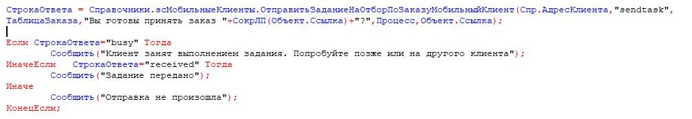
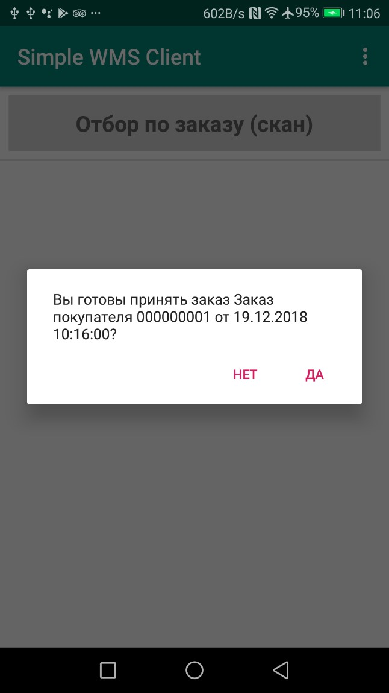
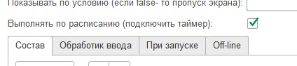

Общие функции платформы¶
Список Задачи (для он-лайн)¶

По кнопке «Задачи» теперь можно запросить учетную систему не предмет какого то списка задач, заказов и т.д. Например это могут быть «Текущие заказы к доставке для определенного пользователя»
В момент нажатии кнопки приложение делает запрос к сервису (/get_tasklist/), и он возвращает некий список. Этот список представляется пользователю как список карточек с определенным оформлением
Вместе со списком можно передать наименование операции которую надо запустить при клике на задачу, ID задачи, некий параметр который записывается в orderRef и который потом можно прочитать в обработчике.
При клике на задачу передается запрос на специальный сервис (taskcommit) с ID задачи. Это можно использовать для биллинга например.
Все это рабоатет через 2 сервиса:

В обработчике get_tasklist приведен пример заполнения списка. Для каждой карточки можно заполнить 4 поля: заголовок, 2 реквизита (при этом установив заголовок поля) и поле примечание внизу. Также в примере показано какие еще специальные поля передаются в список и как они обрабатываются.
В демо базе пример в рабочем месте «Отгрузка» процесс «Отгрузка по заказу (из списка)» демонстрирует обработку заказа из списка.
Совет
Список задач также рабоатет и в самостоятельном режиме (в случае если бекенд - не 1С). Это описано в разделе REST самостоятельного режима.
Работа с таблицами и план-факт¶
Через переменные в виде строки json можно передавать произвольные таблицы и размещать их в разных местах программы.
- Произвольная таблица может быть представлена в виде:
Элемента экрана, вместе с другими элементами. Для этого нужно использовать элемент экрана «Таблица» и в переменной передать строку json в специальном формате
Переопределить нажатие центральной кнопки План-факт. Старый формат также действует, но если задана произвольная таблица то это имеет приоритет. Для этого нужно вставить переменную central_table. Например :
Переменные.Вставить("central_table",CтpoкaJSON);Вызвать отдельное окно с таблицей по какому то событию (например по нажатию кнопки) с заполненной таблицей на весь экран. Для этого нужно использовать переменную report_table Например:
Переменные.Вставить("report_table",CтpoкaJSON);
В структуре json можно описывать :
столбцы таблицы – имя, заголовок, ширину колонки
Общие опции таблицы – размер шрифта, скрыть заголовок, отключить подсветку линий через строку
Непосредственно данные в ячейках
Раскраску отдельных ячеек произвольными цветами
Структура формата таблицы не зависит от места использования таблицы – она общая.
Пример формата:
{
"type": "table",
"textsize": "25",
"hidecaption": "true",
"hideinterline": "true",
"columns": [
{
"name": "nom",
"header": "Товар",
"weight": "2"
},
{
"name": "qty",
"header": "Кол-во",
"weight": "1"
},
{
"name": "price",
"header": "Цена",
"weight": "1"
}
],
"rows": [
{
"name": "Процессов Intel Core 9 OEM",
"qty": "5",
"price": "15500.00"
},
{
"name": "Процессов Intel Core 5 BOX",
"qty": "-2",
"price": "12500.00"
},
{
"name": "Процессов Intel Core 5 (OEM)",
"qty": "2",
"price": "11500.00"
}
],
"colorcells": [
{
"row": "1",
"column": "1",
"color": "#d81b60"
}
]
}
Атрибут type обязательный он должен быть всегда значение «table»
textsize -необязательный – отвечает за размер текста
hidecaption – необязательный – не выводить шапку таблицы
hideinterline – необязательный – не выводить раскраску строк
columns обязательный массив в котором описываются колонки. name – внутреннее имя, header -отображаетмый заголовок, weight – ширина колонки в виде относительного веса. Если задать все колонки в 1 то они будут равны.
rows обязательный массив в котором описываются строки. Каждый элемент имеет имя, совпадающее с именем столбца и значение
colorcells необязательный* массив– подсветка произвольных ячеек нужным цветом. Строка и столбец задаются номерами начиная с 0. Цвет (color) – в HEX виде.
Нажатие на строку таблицы таблицы вызывает событие ввода и передачи данных на сервер. Выбранная строка - объект JSON сериализуется в переменную selected_line
Обработка ввода по таблице.¶
В версии «Pro» доступно получение события о выбранной строке таблицы. Пример помещен в конфигурацию «Примеры #2». При нажатии на таблицу в переменную «selected_line» пишется json с выбранной строкой
Для «самостоятельно режима» при клике по таблице возвращается не json. Программа ищет в выделенной строке поля id, order и orderRef и если они есть, записывает в переменные значения selected_line_id, order и orderRef
Запуск процессов из процессов и другие управляющие команды¶
Можно немедленно запустить процесс из другого процесса, если в присвоить переменной StartProcessHashMap строку, содержащую имя вызываемого процесса. Это вызовет запуск нового окна с другим процессом– туда скопируются переменные из вызывающего окна и выполнятся все процессы. После того как работа с новым процессом будет закончена – в старом процессе работа продолжится с текущего шага. С помощью этого приема удобно организовывать цикл в цикле. Пример в демо базе: «Цикл в цикле»
Также есть другая аналогичная функция - StartProcess. Вызов: присваивание переменной StartProcess строку, содержащую имя вызываемого процесса. Это будет просто переключение процесса без возврата на вызывающий процесс.
GPS¶
В настройках есть галочка «Отправлять координаты» если ее включить то в люом процессе который запущен будут добавляться специальные переменные относящиеся к службе геопозиционирования.
Внимание
Необходимо в настройках дать приложению разрешение на определение местоположения. Также необходимо убедиться, что в устройстве включено определение местоположения.
Устройство запрашивает данные каждые 5 секунд и отправка происходит каждый раз когда отправляются переменные. Сразу в момент запуск апроцесса данных может не быть, нужно чуть-чуть подождать.
Данные запрашиваются и поступают с 2х провайдеров – gps и network (сети или wi-fi) – в обработчике можно фильтровать по факту.
Специальные переменные, в котрые устройство передает данные:
Latitude – широта
Longitude – долгота
gps_city – город, если есть в адресе
gps_postal_code – индекс
gps_addres_string – полная неразобранная информация , которую можно разобрать по тегам
gps_provider – источник данных
gps_accuracy - точность
Экран диалога¶
Можно запустить модальный экран для ввода значений с кнопками «ОК» и «Отмена» и перехватывать событие этого экрана. В случае нажатия на ОК будет вызвано событие ввода и переменные этого экрана могут быть обработаны.
Состав экрана вы определяете сами – это обычный экран
Вызов экрана через обработчик – Переменные.Вставить(«StartScreen», «Имя экрана»). Вызываемый экран должен быть в составе процесса.
Получение события через обработчик: переменная event установлена в “OnResult”
{kind=link}
Запуск экрана Offline: вид действия для запуска «Запустить экран», параметр – точное название экрана диалога который есть в составе процесса
Событие ввода : Вид обработчика – «Закрытие экрана», в Обработчике указываете название экрана диалога. Пример есть в демо.
Логин и запуск конфигурации¶
Можно организовать экран входа в систему котрый будет запускаться при запуске приложения и пункт основного меню для перелогинивания. Для того чтобы процесс запускался при входе в приложение нужно поставить галочку «Запустить при старте»

Для того, чтобы произошла загрузка нужной конфигурации нужно заполнить переменную ID кодом справочника Мобильные клиенты, нужного клиента. Это тот же код который указывается в настройках. Если с терминалом будут работать несколько человек, можно создать конфигурацию, содержащую толкьо процесс «Логин» , и другие клиенты будут подгружаться из нее.
Также процесс с логином можно добавить во все конфигурации клиентов, в которых нужно перелогиниваться (совместное использование одного терминала)
Печать на мобильном устройстве¶
На мобильном устройстве доступна печать PDF-документа сформированного на стороне сервера. Например это может быть печатаная форма, сохраненная в 1С. В демо базе есть пример создания печатной формы и экрана для печати – см. команду print_pdf HTTP сервиса SimpleWMS.
Принцип работы следующий:
Обработчик события (кнопки или иного события) на устройстве инициирует запрос в сервис /print_pdf/*. Передавая при этом строку параметров ктоорые нужны для печати формы. Разработчик сам формирует эту строку и сам предусматривает параметры
Обработчик команды находит нужный документ или объект, формирует печатную форму и сохраняет в PDF отправляет в ответе
На стороне устройства читается ответ, извлекается PDF и отправляется менеджеру печати.
Для онлайн-режима:
Команда печати передается через переменную PrintService. Например так. В качестве значения нужно передать строку параметров запроса который пойдет на сервер
Переменные.Вставить("PrintService","operation=print&barcode="+Переменные.barcode);
Далее в модуле команды print_pdf параметры извлекаются и на основании этой информации формируется ответ с печатной формой В operation можно передать либо print либо view – и это же должно пойти в ответе. На основании этого параметра откроется либо сразу менеджер печати либо программа просмотра PDF
Подсказка
если print не работает - попробуйте view. Это зависит от устройства и софта.
Для документов:
В отличии от экранов строка параметров формируется автоматически и в ней идет команда doc_print и предопределенный параметр uid – в котором содержится УИД Экземпляра документа. Также идет параметр template – с названием печатной формы.
Для определения списка печатных форм документа нужно добавить необходимо добавить их в табличную часть «Печать». Вид печати – «Печать через сервис». Остальное можно не заполнять.
Веб-сервис на клиенте. Возможности¶
Передача задания напрямую на устройство¶
На клиент может быть отправлено задание (пример есть в форме документа «Заказ покупателя»). Это не просто отправка и не просто отправка напрмую, а еще и прямое взаимодействие - так как пользователь может быть занят или отказаться от задания и это все в режиме реального времени будет видно в учетной системе в процессе.
{kind=link}
Для этого достаточно указать адрес клиента (это адрес веб-сервера на мобильном устройстве, которых храниться в справочнике «Мобильные клиенты»),ТаблицаЗаказа (заполненную как указано ранее), сообщение, которое будет отображено в диалоге, имя процесса.
Функция ОтправитьЗаданиеНаОтборПоЗаказуМобильныйКлиент(АдресТерминала,Команда,ТаблицаДанных,Сообщение,Процесс,Заказ ) Экспорт
Также при передаче такого сообщения передаются переменные order и orderRef содержащие ссылку на заказ (параметр Заказ) и представление заказа При приеме сообщения веб-сервер клиента проверяет, не занят ли клиент выполнением какого то другого процесса и если занят отправляет ответ busy, если нет то ответ будет **recieved. Если же произошла ошибка при доставке то ответ будет другой. Также состаояние загрузки мобильного клиента можно прочитать в регистре сведений scСтатусыИсполненияПроцессов
При доставке сообщения на главном экране будет показан диалог и прозвучит звук приема сообщения (даже если экран выключен, так как веб-сервер рабоатет как сервис)
{kind=link}
Если пользователь нажимает «Да», то запускается процесс котрый был указан в методе. Важно: в конфигурации пользователя должен присутствовать этот процесс.
Передача голосового сообщения на устройство¶
Можно отправить текст на конкретное устройство, и оно будет произнесено с помощью синтеза речи даже если программа свернута или выключен экран блокировки.
Для этого нужно использовать команду Voice с параметром text. Например так:
Справочники.scМобильныеКлиенты.ОтправитьSQLЗапросМобильныйКлиент(URLМобильногоУстройства,"Voice","text","&text=Ваша фраза на языке по умолчанию”)
Команды SQL и Передача конфигурации¶
Данные команды описаны в разделее Самостоятельный режим
Odata¶
Если в серверной части параллельно с веб-сервисом опубликован интерфейс Odata то можно вместо заполнения источников данных запросами через обработчики просто указать запрос к OData в конструкторе. Для этого необходимо в настройках программы указать адрес сервера Odata

После чего можно использовать OData запросы для таблицы или списка как показано на рисунках. Обратите внимание что для списка нужен толкьо одно поле – берется первое поле. Поэтому его лучше определить оператором select Для таблицы выводятся все поля, но их тоже лучше определять select чтобы не было лишних столбцов


Запуск/Переключение экранов с сервера напямую и таймер событий экрана/обработчик ожидания (только для Pro-версии)¶
Возможно с сервера передавать на конкретное устройство команду переключения экрана (после которой устройство шлет запрос send_input и отрисовывает экран по новой). Это может понадобится например для организации информационных табло на телевизорах с Андроид. Т.е. для любого открытого процесса выполнится переключение экрана.
Это можно сделать например строкой Справочники.scМобильныеКлиенты.ОтправитьSQLЗапросМобильныйКлиент(URLМобильногоУстройства,"Run","txt","&text=blob");
Пример есть в демо базе в обработке «Примеры взаимодействия с сервером»
Также можно подписать экран на выполнение периодической команды переключения экрана. Это может понадобится для той же цели – периодического показа например какого то информационного экрана. Таймер задается в настройках приложения. Признак того что экран будет выполниться по расписанию – вот эта галочка. В демо базе можно посмотреть пример с Индикаторами. Будет работать толкьо если у вас – Pro-версия.
{kind=link}
Замеры производительности¶
Для того чтобы изменить время выполнения экрана (допустим операций, перечисленный в ПриОткрытии) нужно запустить его с помощью установки переменной RunTestScreen а значение – имя экрана. После загрузки в переменную TestResult будет помещено время выполнения в миллисекундах.
Отправка статусов¶
Как уже было описано выше, при запуске процесса и при его окончании, отправляется запрос set_status. Данные пишутся в регистр «scСтатусыИсполненияПроцессов». По этому регистру можно мониторить состояние загруженности кладовщиков . Эти данные можно использовать для диспетчеризации отправки заданий кладовщикам (отправлять на незанятые клиенты). Ну и так как туда пишется время начала и окончания процесса, то легко посчитать длительность выполнения операций, что обычно используется в отчетах по эффективности работы.